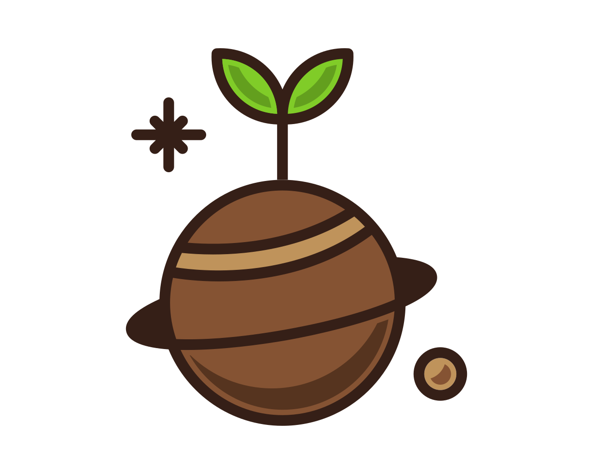

Why Black Soldier Fly Larvae?
Species-specific benefits for chickens, birds, reptiles and fish — plus nutrition values and environmental impact.
Up to 50% protein
Naturally high calcium
Sustainably produced

 Benefits for Chickens
Benefits for Chickens
- High-quality protein to support condition and recovery.
- Naturally high calcium to support strong eggshells.
- Highly palatable; encourages natural foraging behaviour.
- Great as a training/reward treat alongside a balanced feed.
 Benefits for Pet Birds
Benefits for Pet Birds
- Natural insect snack for insectivorous/omnivorous species.
- Protein and healthy fats to support feathers and energy.
- Useful enrichment; can offer dry or slightly rehydrated.
 Benefits for Pet Reptiles
Benefits for Pet Reptiles
- Balanced protein & fat; suitable for many lizards/geckos.
- Often favourable Ca:P ratio vs many common feeders.
- Dried BSFL store easily and are low-mess vs live feeders.
 Benefits for Fish
Benefits for Fish
- Well-accepted natural prey for many tropical and pond fish.
- Dense nutrition for growth/conditioning; float or pre-soak as needed.
- Mix with pellets for variety and appetite stimulation.

Environmental Impact- Upcycles low-value organic by-products into high-value protein and frass.
- Efficient conversion and compact footprint vs traditional protein sources.
- Frass (insect compost) supports soil health and plant growth.
Nutrition Values (Dried BSFL, Typical Ranges)
Values vary by strain, diet, age, and process. Use ranges as guidance, not absolutes.
| Metric | Typical Range | Notes |
|---|---|---|
| Crude Protein | 40–55% | Method- and batch-dependent |
| Crude Fat | 20–35% | Defatting lowers this |
| Moisture | 3–8% | Shelf-stable target |
| Ash (minerals) | 8–15% | Includes calcium |
| Calcium | 1.5–8%+ | Strain/diet dependent |
| Ca:P Ratio | ~1.5:1 – 3:1 | Often favourable vs many feeders |
How to Feed & Tips
General Guidance
- Use as a supplement or treat alongside a balanced diet.
- Adjust portion to species size and activity; start small and observe.
- For dried BSFL, you can briefly soak to soften for certain species.
Storage
- Keep sealed in a cool, dry place away from sunlight.
- Use within the best-before date; reseal after each use.
FAQs
Can I feed BSFL every day?
Yes, as part of a varied diet. Many keepers use BSFL frequently; balance with other feeds.
Are they safe for young animals?
Offer appropriately sized portions. For very young or small animals, crush or pre-soak as needed.
What about allergies?
Introduce gradually and monitor. Discontinue if any adverse reaction occurs; consult your vet if unsure.
Ready to try GRUBZ?
High-quality dried BSFL, packed in Greece.